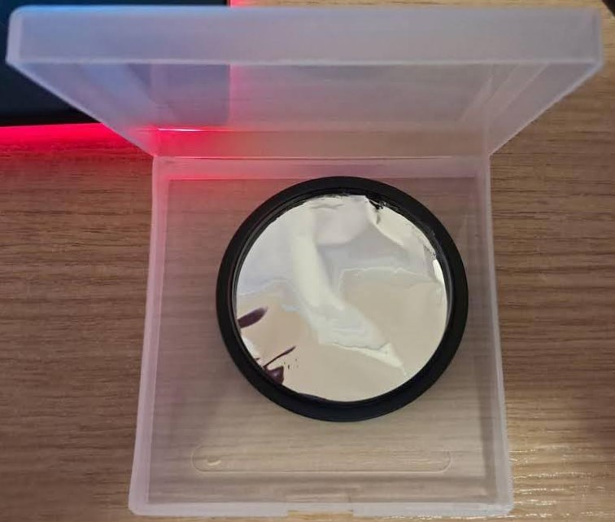
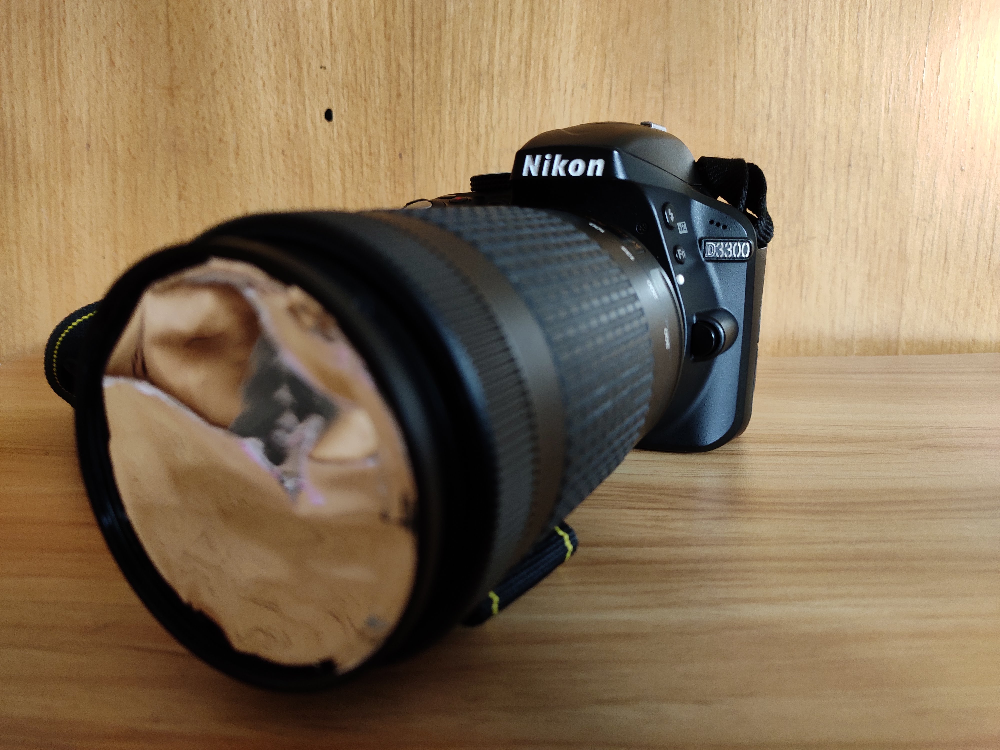

GitHub
GitHubSarthak Choudhary
About
I have a dynamic background in instrumentation and experimental physics, where I’ve worked on some pretty exciting projects. I developed a novel algorithm for analysing X-ray spectroscopic data from the Chandrayaan-1 lunar orbiter and contributed to direct dark matter search with DEAP-3600 liquid argon detector.
Research Experience
I have worked in the domain of astroparticle physics, specifically contributing to the search for dark matter using liquid argon detectors. I was involved in the development and validation of a PyTorch-based Monte Carlo Pulse Shape Discrimination (PSD) code for liquid argon dark matter detectors. Additionally, I contributed to the characterisation of polymeric wavelength shifters for future liquid argon detectors. This gave me hands-on experience in assembling and operating liquid argon experimental test stands. I characterised and calibrated a custom gas argon setup (ArGSet) for the characterisation of polymeric wavelength shifters for DarkSide-20k veto detector, which is currently under construction. I calibrated silicon photomultipliers used in ArGSet, developed an algorithm to reject noisy events, and created tools for data analysis. I also worked on an analytical model to estimate the light yield of scintillator detectors, validating it with GEANT4 simulations and tabletop experimental measurements.
Contact
Publications
- Cryogenic setup for the characterisation of wavelength-shifting materials for noble element radiation detectors.
- The optical simulation model of the DarkSide-20k Veto detector.
- Direct comparison of PEN and TPB wavelength shifters in a liquid argon detector.
- Demonstration of the light collection stability of a PEN-based wavelength shifting reflector in a tonne scale liquid argon detector.
DIY Projects
Photographing the nature

See more photos here.
DIY Equipment
-
DIY clip-on solar filter

-
Camera with the clip-on solar filter

-
Picture of Sun taken with above equipment

Schools
Workshops
Certificates
Wavelength shifters for liquid argon radiation detectors
Science Outreach
I have been very lucky to have met and learned from passionate science communicators across the globe. My first brush with science outreach was during my master's studies at the Indian Institute of Astrophysics (IIA), where I frequently joined student-led efforts to bring science to the masses—whether it was showcasing our instruments (e.g., the Heliostat) to school pupils, demonstrating science concepts at the National Science Day exhibition, or visiting government-run schools in low-income regions. Additionally, I wrote and edited popular science articles for the student-run e-magazine DOOT at IIA.
More recently, I have been involved in outreach activities in Warsaw, such as showing a solar eclipse to high school students and demonstrating fundamental physics concepts at the National Museum of Technology in Warsaw during the Warsaw Museum Night.
Co to był za dzień! Wczoraj obchodziliśmy Międzynarodowy Dzień Astronomii ! Nasza Szkoła Doktorska GeoPlanet Doctoral...
Posted by Centrum Astronomiczne im. M. Kopernika PAN on Sunday 19 May 2024
I have also helped organise an online workshop on the direct detection of dark matter, mentored by my colleagues from DEAP-3600, to familiarise students with astroparticle physics.